리니지
1998년 출시한 중세 판타지 시대 배경의 MMORPG이자
국내 최초의 인테넛 기반 온라인 게임인 리니지.
2008년 단일 게임 최초로 누적 매출
1조원을 달성하고 혈맹 시스템과 공성전 등 MMORPG의 기틀을 마련하며
20년이 지난
지금까지 대한민국을 대표하는 온라인 문화 콘텐츠로 막강한 영향력을 발휘하고 있다.
- HOME
- WHAT WE CREATE
대한민국 온라인 게임의 역사를 연
MMORPG의 표준
- 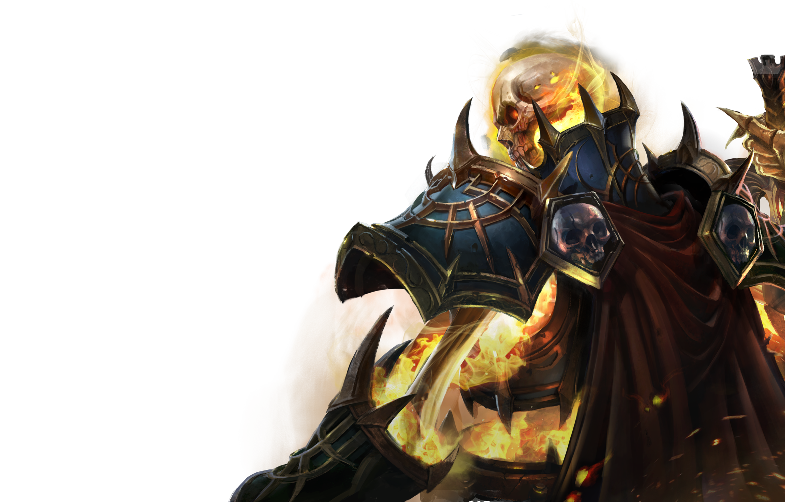
-
대한민국 온라인 게임의 성장과 발전을 이끈 대표 게임으로
군주 중심의 혈맹과 대규모 전투인 공성전, 무기 강화 시스템 등
리니지가 새롭게 창조한 특유의 시스템과 콘텐츠는
이후 탄생한 수많은 MMORPG의 표준이 됐다.
세계 최초의 대규모 RvR
공성전
- 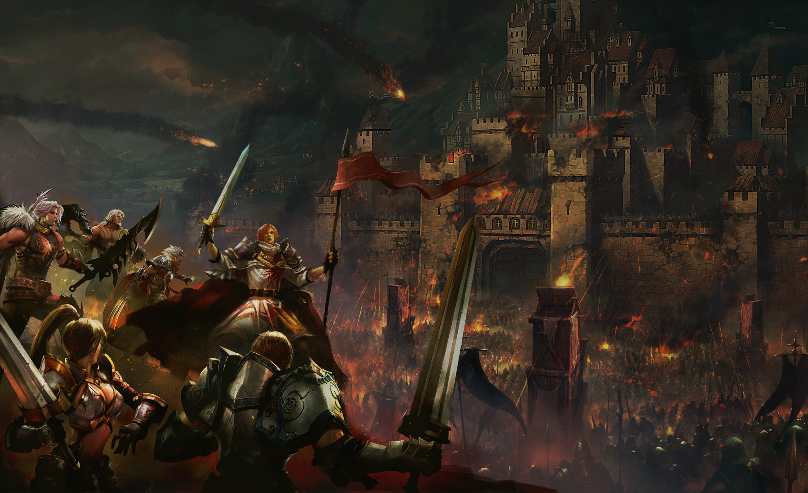
-
리니지가 세계 최초로 도입한 RvR 콘텐츠인 공성전은
성을 쟁탈하기 위한 혈맹 간의 대규모 전투 시스템이다.
협동과 대립을 통해 동일한 목표를 달성하는 과정에서
MMORPG의 핵심 재미를 구현해낸 공성전은
한국 온라인 게임의 특화된 전투 방식으로 확립됐다.
온·오프라인을 휩쓴
리니지 신드롬
- 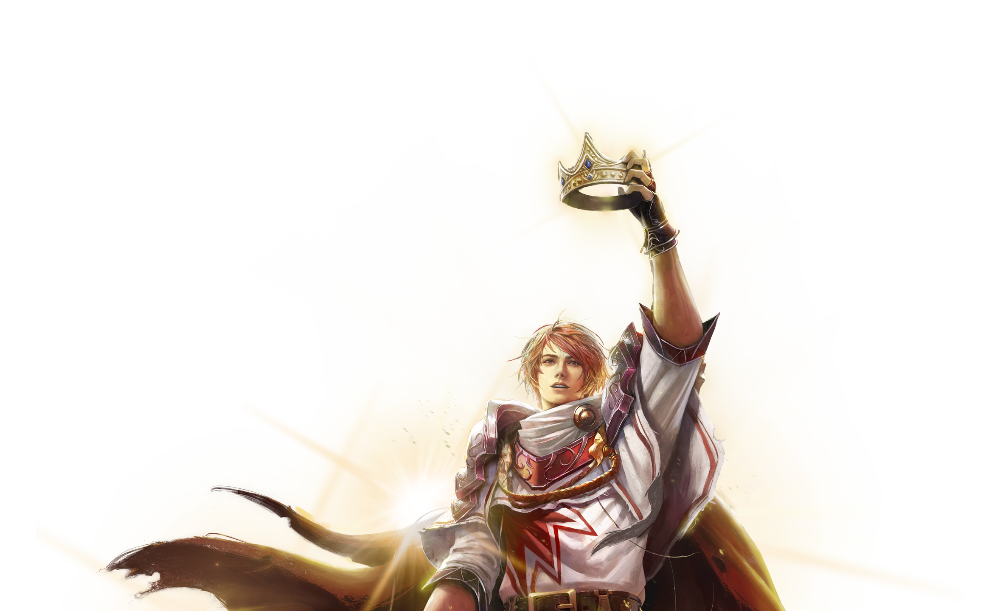
-
1998년 출시 직후부터 사회적 열풍을 일으킨 리니지는
서비스 개시 후 15개월 만에 100만 명의 회원을 달성하고
2016년에는 누적 매출 3조 원을 돌파하는 등 기록을 갱신해왔다.
아덴 왕국이라는 가상 세계에서 새로운 자아를 찾고
플레이어들의 자발적인 힘으로 연대의 스토리를 만들어 나가는
새롭고도 충격적인 문화적 경험은 온·오프라인의 경계를 넘어
리니지만의 고유한 사회화 현상으로 이어져오고 있다.
리니지2
리니지의 150년 전 아덴 왕국의 통일 시대를 배경으로
한 중세 판타지 세계관의 PC MMORPG 리니지2.
2003년 출시 당시 완성도 높은 3D 그래픽을 선보이며 심리스 오픈 월드를 통해 높은 자유도를 구현하고
바츠 해방 전쟁이라는 온라인 거대 서사를 탄생시켰다.
- HOME
- WHATE WE CREATE
게임 그래픽 기술의
기준을 제시한
FULL 3D MMORPG
- 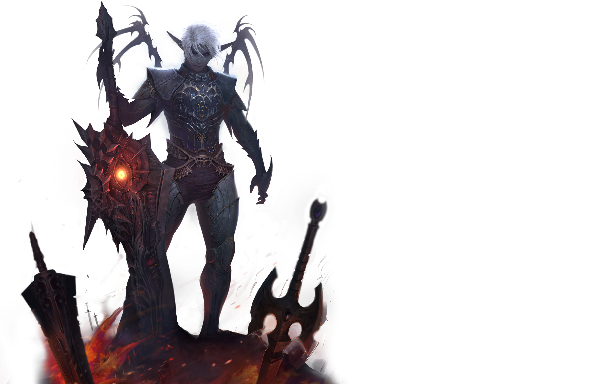
-
리니지2는 게임 내 전체 월드를 3D 그래픽으로 구현한
압도적인 그래픽 기술로 국내외에서 큰 호평을 받았다.
또한 출시 당시 언리얼 엔진2로 심리스 로딩 방식을 개발해
월드 간 이동에 따른 로딩 지연 없이 플레이를 즐길 수 있는
혁신적인 '심리스 오픈 월드' 기술을 선보였다.
플레이어들이 창조한 거대 서사
바츠 해방 전쟁
- 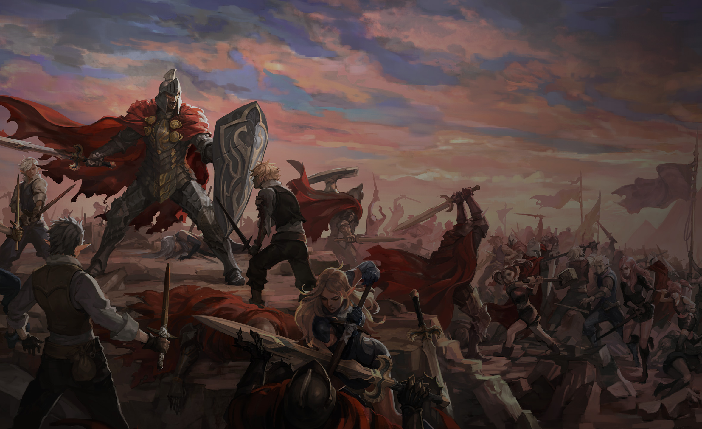
-
2004년 6월 바츠 서버에서 발생한 대규모 플레이어 간 전쟁인
바츠 해방 전쟁은 약 4년간 20만 명 이상의 플에이어가 참여하며
한국 게임사에서 유례 없는 '온라인 시민 혁명'으로 기록됐다.
또한 웹툰, 소설, 논문, 전시회 등 다양한 문화 콘텐츠로 재생산되며
온라인 게임의 사회성과 정치성이 반영된 사례로 손꼽히고 있다.
해외 게임 시장을 개척한
대한민국 대표
온라인 MMORPG
- 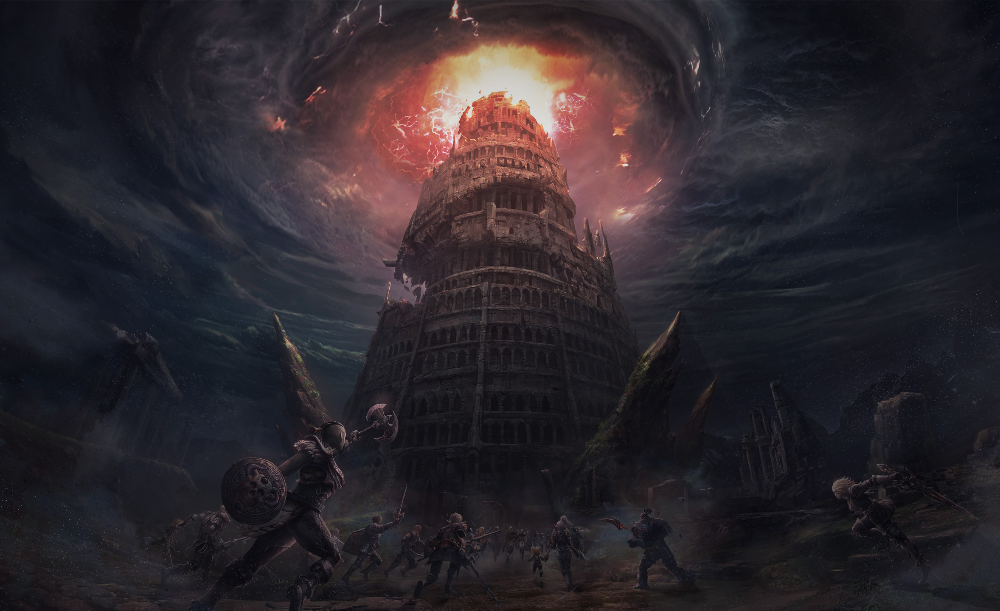
-
북미 출시를 시작으로 해외 시장에 첫 걸음을 내딘 리니지2는
대만과 일본, 중국, 유럽, 태국, 러시아 등에 진출하며
전 세계를 휩쓴 대작 온라인 게임으로 자리 잡았다.
특히 온라인 게임의 불모지라 불리던 일본에서
PC방 점유율 1위를 달성하는 등 큰 성공을 거두며 쾌거를 이뤘다.
AION
두 세계로 분열된 아트레이아의 영원의 탑을 둘러싼 천족과 마족
그리고 용족의 전투를 그린 3D MMORPG.
국내 최초의 공중 PvP로 화제를 모은 아이온은
완성도 높은 그래픽과 OST로 예술성까지 인정받으며
160주 연속 PC방 1위라는 게임사의 대기록을 세웠다.
- HOME
- WHAT WE CREATE
국내 최초
종족 간 공중 PvP
- 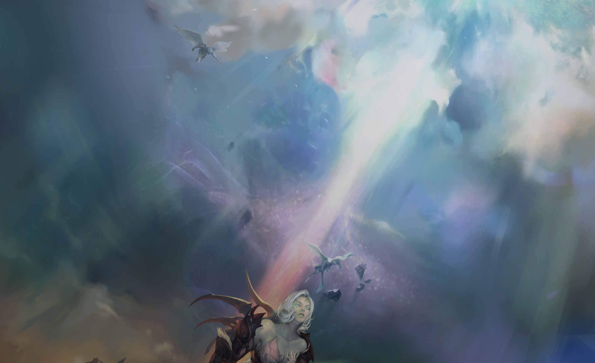
-
날개를 이용해 하늘을 자유롭게 이동하며 즐기는 비행 전투는
아이온만의 상징이자 독보적인 콘텐츠로 자리 잡았다.
천족과 마족, 용족 간의 끝없는 전투를 다루는 아이온은
국내 게임사 최초로 공중 공간에서의 PvP 기술을 개발,
화려한 공중 전투를 구현하며 인기와 작품성을 모두 얻었다.
게임음악의 새로운 역사를 쓴
아이온의 OST
- 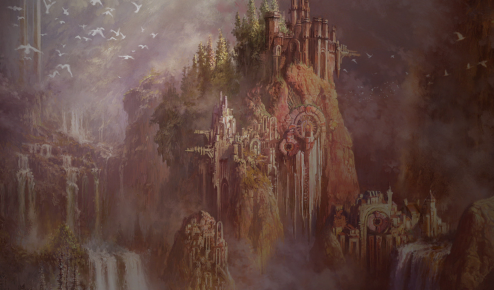
-
아이온의 OST는 한국의 게임 음악 역사상
가장 완성도 높고 성공적인 음반으로 손꼽힌다.
아이온은 출시 당시 무려 3년 동안 제작된 OST를 공개하며
반지의 제왕 등으로 유명한 런던 애비로드 스튜디오에서
73인조 런던 심포니 오케스트라와 음악가 양방언 등이 참여한
블록버스터급 게임 음악으로 큰 감동을 선사했다.
모두를 사로잡은
아름다운 이미지와 정교한 그래픽
- 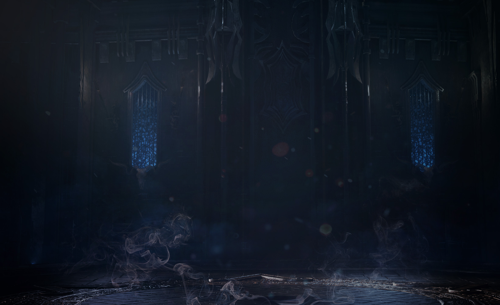
-
아이온만의 아름답고도 감성적인 그래픽은
남녀 모두의 마음을 사로잡으며 그 작품성까지 높게 평가받았다.
예술의 경지에 이른 아이온의 섬세한 게임 아트는
2006년 E3에 처음 공개되어 최우수 그래픽상을 받았고
Gamescom 2009 최고 온라인 게임상, 아시아 온라인 어워드 대상 등
해외에서 그 작품성을 인정받으며 수많은 트로피를 거머쥐었다.
BLADE & SOUL
무림 고수 '천하사절'인 홍석근의 밑에서 수련하던 막내가 자신을 돌본 홍문파를 멸문시킨 진서연을 향해
복수의 여정을 떠나는 스토리의 무협 액션 MMORPG.
2012년 6월 출시한 블레이드 & 소울은 동양적 세계관의 스토리텔링과 최고 수준의 그래픽,
실감나는 무협 액션 등의 기술력까지 더해진 역작으로 평가받는다.
- HOME
- WHAT WE CREATE
독창적 스토리와 캐릭터가 돋보이는
동양 무협 세계관의 퓨전 판타지
- 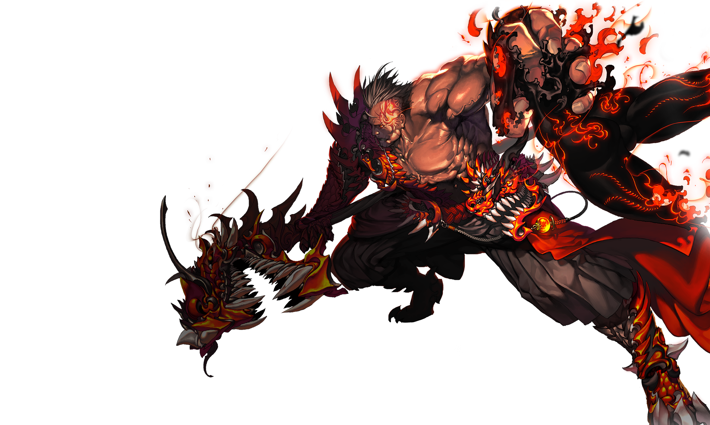
-
동양적 무협 세계관을 바탕으로 주인공의 성장을 다룬
블레이드 & 소울만의 독창적인 스토리텔링과 캐릭터 설정은
여타의 MMORPG와 차별화되는 요소로 자리 잡았다.
매력적인 악녀 진서연, 영원한 사부 홍석근, 의롭고 정 많은 화중 등
입체적이면서도 개성 뚜렷한 캐릭터들이 만들어내는 스토리는
정교하게 짜인 컷신과 퀘스트를 통해 게임의 몰입감을 높인다.
독보적인 무협 액션을 구현한
최고 수준의 그래픽
- 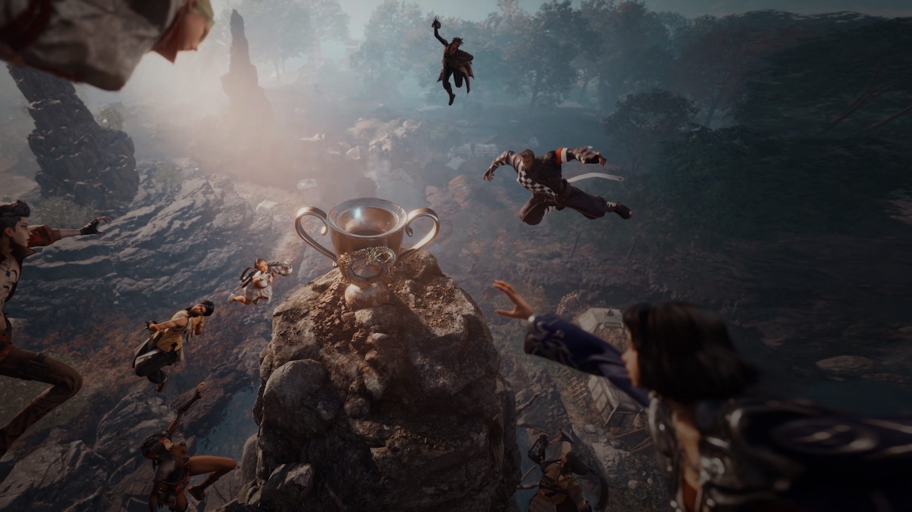
-
블레이드 & 소울은 하늘을 가르는 경공이나 물 위를 달리는 수상비 등
동양 무술을 응용한 무협 액션이 돋보이는 MMORPG다.
보다 현실적이고 생동감 넘치는 액션의 구현을 위해
최고 수준의 그래픽 기술과 콘셉트 아트가 적용됐고
언리얼 엔진 4 기반의 그래픽 리마스터를 통해
캐릭터 묘사와 전투신 등 시각 효과와 액션감이 강화됐다.
게임에서 문화 콘텐츠로
블소 IP의 무한한 확장
- 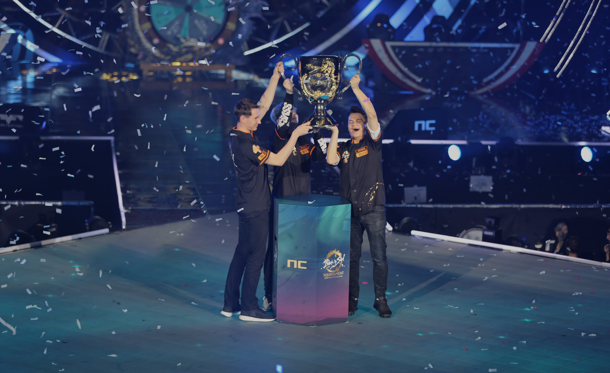
-
블레이드 & 소울만의 독창적 스토리와 매력적인 캐릭터는
다양한 문화 콘텐츠로의 확장을 돕는 원동력이 됐다.
웹툰과 웹소설 형태의 서사 콘텐츠를 담은 사이트 '서고'와
진서연을 주인공으로 한 뮤지컬 '묵화마녀 진서연',
공식 e스포츠인 블소 토너먼트 월드 챔피언십까지
블레이드 & 소울의 문화적 실험은 계속되고 있다.
BLADE & SOUL 2
'블레이드 & 소울'의 정식 후속작, '블레이드 & 소울 2'는 진화한 경공, 화려한 무공의 연계등
정형화된 전투를 탈피하며 MMORPG의 기술적 한계를 뛰어넘었다.
여기에 전작의 세계관을 아우르며 이어지는 스토리 시스템인 '사가',
동양적 색채가 묻어나는 아름답고 입체적인 월드는
'블레이드 & 소울 2' 이후 게임의 새로운 기준을 제시한다
- HOME
- WHAT WE CREATE
MMORPG의 정점을 찍은
인터랙티브한 전투와 액션
- 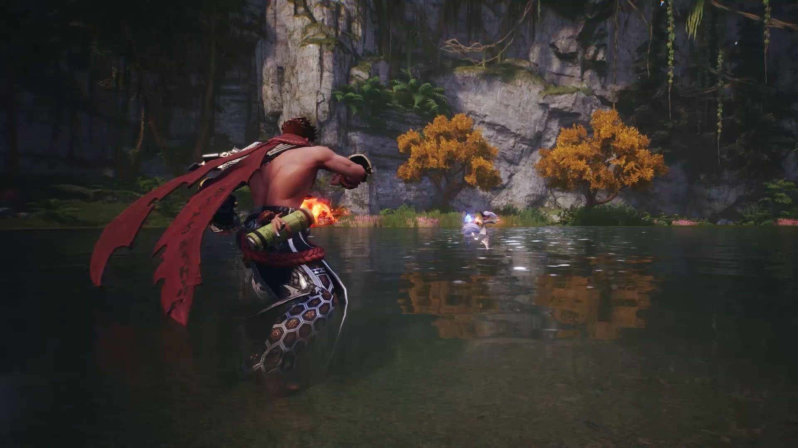
-
상황에 따라 무공을 조합, 연계하는 등 전투 본연의 쾌감을 높였다.
플레이어의 행동에 따라 변하는 몬스터의 행동을 예측해
공격하거나 피하며 긴장감 넘치는 전투를 즐길 수도 있다.
뿐만 아니라 화려한 액션과 시원시원한 타격감으로
전작의 독보적인 무협 액션 MMORPG를 계승했다.
숨겨진 전설을 발견하는 재미,
하늘을 가르는 경공
- 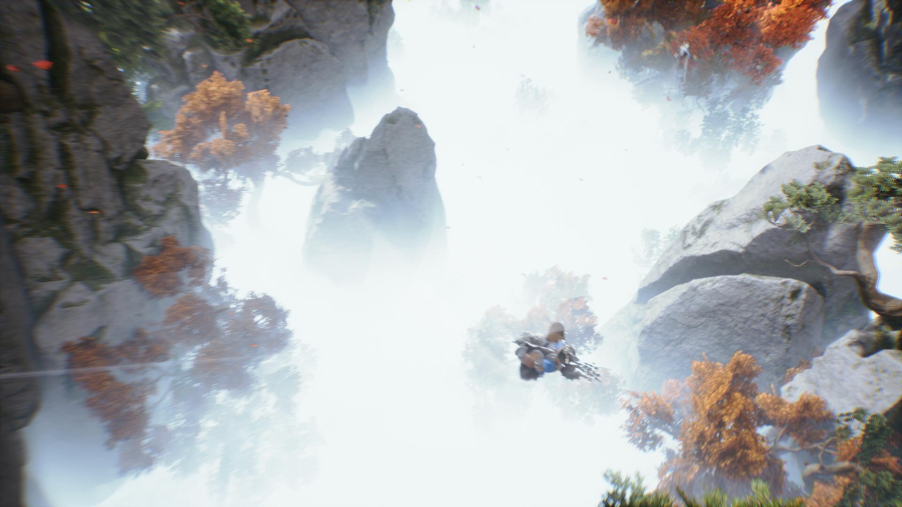
-
경공으로 산과 물 위를 뛰어넘어 미지의 공간을 마주하고,
새로운 몬스터나 이야기를 발견하는 등 탐험의 즐거움을 선사한다.
적의 공격을 피하거나 반격하는 등 전투에도 활용 가능한 경공은
이동 수단에서 한 발 나아가 새로운 플레이의 재미를 경험할 수 있다.
사가, 과거와 미래를 관통하는
미지의 이야기 속으로
-

-
필드 곳곳에 숨겨진 기억의 조각을 발견해 게임 속 이야기를 듣고
캐릭터의 능력치까지 성장시킬 수 있는 스토리텔링 시스템 ‘사가’.
탐험의 재미와 동시에 성장의 기쁨까지 제공하는 사가는
영상, 일러스트, 소설, OST 등의 다양한 미디어를 통해
새로운 스토리텔링 방향성을 제시한다.